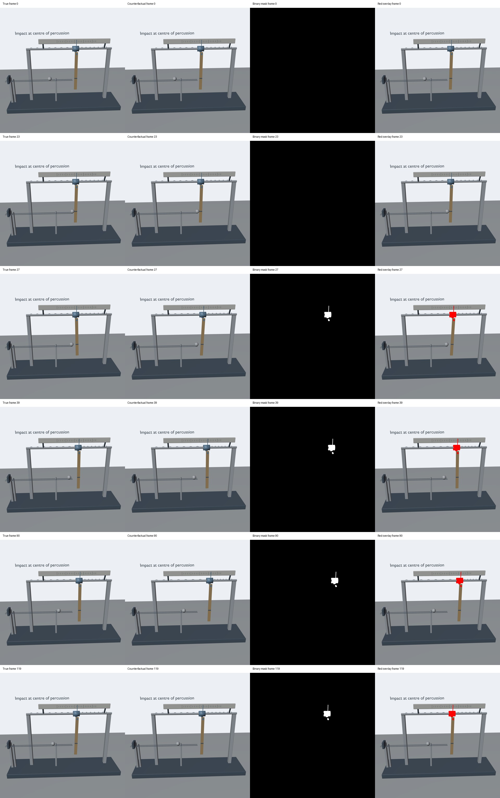
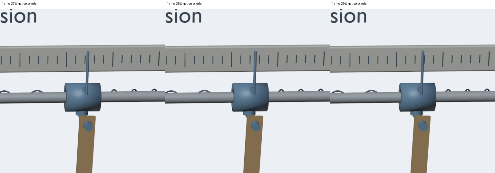
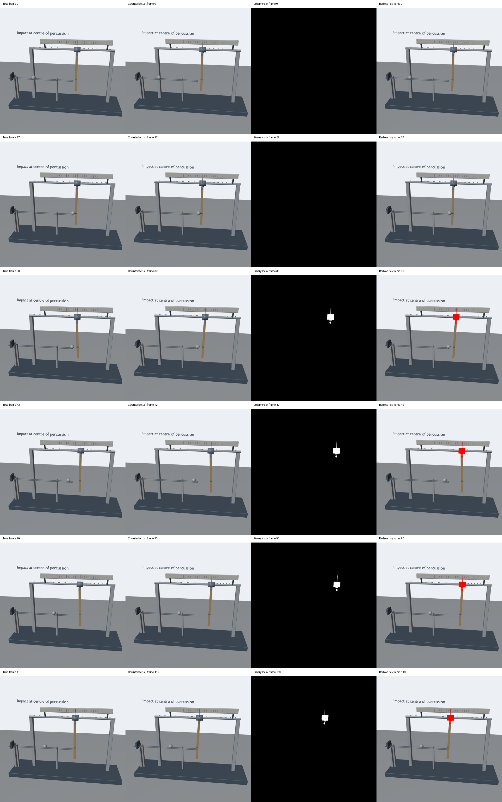
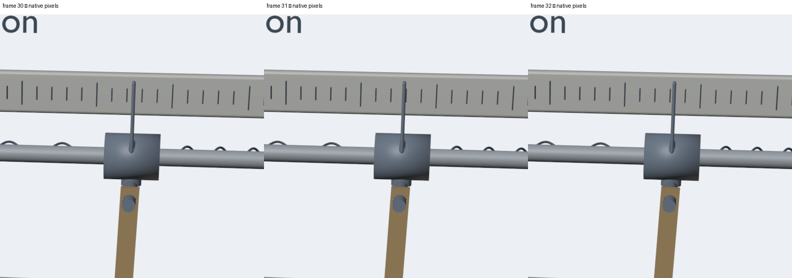

全部四项
打击中心碰撞，却使支点突然受到冲量
正常碰撞瞬间支点不受冲击；反事实支点突然横向跳动。后续平滑移动是正常响应。
center_of_percussion_support_impulse_creation
Contributor self-check PASS · 等待用户审查 · 尚未提交 Sara
Source draft PR #702 · 完整审核版本：0da5ed49346ea1e7a1e7572c5c374379519f56e7
每组包含正常、反事实、黑白遮罩和红色叠加四路视频。下方播放器是 1024×1024 浏览器播放版；原始正式视频为原生 2048×2048、24 fps、120 帧、5 秒、无损 RGB H.264。播放版不替代正式像素检查。
本次完整渲染两组代表样例，不声称渲染了 10 万组；10 万是非渲染参数配置审核数量。
样例 42
干预帧 23；首次画面差异 24；证据帧 27。
两份独立提示词
True
A vertical uniform-density rod with a small pivot bore hangs from an axle on a freely sliding carriage with soft centring springs. A hollow metal ball travels along a horizontal guide and strikes the dark mark at the rod's centre of percussion, then rebounds toward a padded stop. A pointer on the carriage is read against a fixed ruler. The strike initially starts the rod rotating without an impulsive horizontal kick to its pivot carriage. The carriage can move smoothly later as the swinging rod and centring springs exert forces.
Counterfactual
A vertical uniform-density rod with a small pivot bore hangs from an axle on a freely sliding carriage with soft centring springs. A hollow metal ball travels along a horizontal guide and strikes the dark mark at the rod's centre of percussion, then rebounds toward a padded stop. A pointer on the carriage is read against a fixed ruler. At the strike, the pivot carriage anomalously receives an immediate horizontal kick, although the ball hits the rod at its centre of percussion. The rod and carriage then continue their coupled motion under gravity and the centring springs.
完整元数据 · 原始文件 SHA256 · 逐帧编码检查
最终视频解码关键帧

原生像素连续帧边缘检查 · 样例 42

帧号、裁剪范围与版本
样例 98
干预帧 27；首次画面差异 28；证据帧 30。
两份独立提示词
True
A vertical uniform-density rod with a small pivot bore hangs from an axle on a freely sliding carriage with soft centring springs. A hollow metal ball travels along a horizontal guide and strikes the dark mark at the rod's centre of percussion, then rebounds toward a padded stop. A pointer on the carriage is read against a fixed ruler. The strike initially starts the rod rotating without an impulsive horizontal kick to its pivot carriage. The carriage can move smoothly later as the swinging rod and centring springs exert forces.
Counterfactual
A vertical uniform-density rod with a small pivot bore hangs from an axle on a freely sliding carriage with soft centring springs. A hollow metal ball travels along a horizontal guide and strikes the dark mark at the rod's centre of percussion, then rebounds toward a padded stop. A pointer on the carriage is read against a fixed ruler. At the strike, the pivot carriage anomalously receives an immediate horizontal kick, although the ball hits the rod at its centre of percussion. The rod and carriage then continue their coupled motion under gravity and the centring springs.
完整元数据 · 原始文件 SHA256 · 逐帧编码检查
最终视频解码关键帧

原生像素连续帧边缘检查 · 样例 98

帧号、裁剪范围与版本
审核证据
| Gate | 结果 | 证据摘要 |
|---|
| Output contract | PASS | 2 complete native cases; 8 native streams; 2048² / 24 fps / 120 frames / 5s |
| Violating-object-only mask | PASS | 120-frame binary RGB and red-overlay checks; separately selected geometry identity pass; no shadows |
| Real scaling | PASS | 100000 distinct accepted static profiles; six controlled rendered axes; two visually different formal cases; 16 physical-axis corners |
| Official unpatched environment | PASS | Clean source; official pinned bpy 4.5.3; actual Python, renderer, GPU/driver, encoder and dependency witness |
| Decoded matched control | PASS | Exact decoded True/CF prefix and matching camera; first divergence and evidence bound to frames |
| Semantic consistency | PASS | Independent mechanics; standalone prompts; single registered operator; full-clip visual review passed |
Physics authority: generator-owned reduced mechanics. Blender is the renderer; no simulator-native claim. Physical seconds per video second = 1; one recorded outer step at 1/24 s, internal solver substeps recorded separately.
independent-audit.json · identity-projection-audit.json · scale.json · axis-probes.json · boundaries.json · runtime-witness.json · runtime-witness-index.json · runtime.json · reproduce-compare.json · tests.log ·
完整审核报告
申请 JSON（尚未提交）
完整 HTTP(S) JSON 地址
{
"generator_name": "center_of_percussion_support_impulse_creation",
"pr_url": "https://github.com/hipo-dev/counterfactual-data/pull/702",
"head_sha": "0da5ed49346ea1e7a1e7572c5c374379519f56e7",
"review_url": "https://asysama.github.io/counterfactual-mechanics-reviews-20261016/center_of_percussion_support_impulse_creation/0da5ed49346ea1e7a1e7572c5c374379519f56e7/index.html",
"note": "Contributor self-check complete: two native 2048×2048, 24fps, 120-frame cases (42, 98); all four decoded streams, exact matched prefix, object-only binary masks/red overlays, independent mechanics and geometry checks, runtime witness/index, 100000 static CGC-v1 profiles, controlled rendered axes, 16 physical corner profiles and seed42 reproduction verified. Public browser videos played and sought. User review pending; no Sara application submitted.",
"self_check_complete": true
}原始视频 HTTP(S) 地址及 SHA256 · 完整材料校验清单